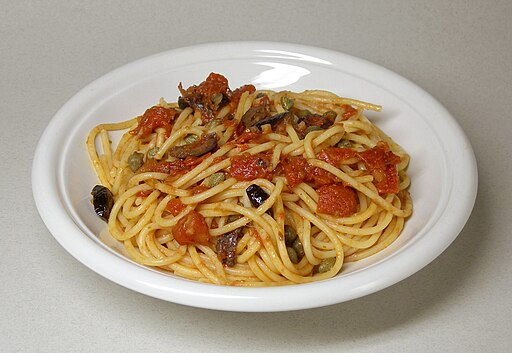

Pasta-Puttanesca
Document

Image by M (Wikimedia Commons), CC BY-SA 3.0
Traditional Recipe
Description
A burst of flavors, yet easy and simple to make.
Ingredients
- 8 ounces spaghetti
- ½ cup olive oil
- 3 cloves garlic, minced
- 2 cups chopped tomatoes, pushed through a sieve
- 4 anchovy filets, rinsed and chopped
- 2 tablespoons tomato paste
- 3 tablespoons capers
- 20 Greek olives, pitted and coarsely chopped
- ½ teaspoon crushed red pepper flakes
Directions
- Bring a large pot of lightly salted water to a boil. Cook spaghetti in boiling water for 8 to 10 minutes or until al dente; drain.
- Heat oil in a skillet over low heat; cook garlic in oil until golden. Add sieved tomatoes, and cook 5 minutes.
- Stir in anchovies, tomato paste, capers, olives, and red pepper flakes. Cook 10 minutes, stirring occasionally.
- Toss pasta with sauce, and serve.
Home